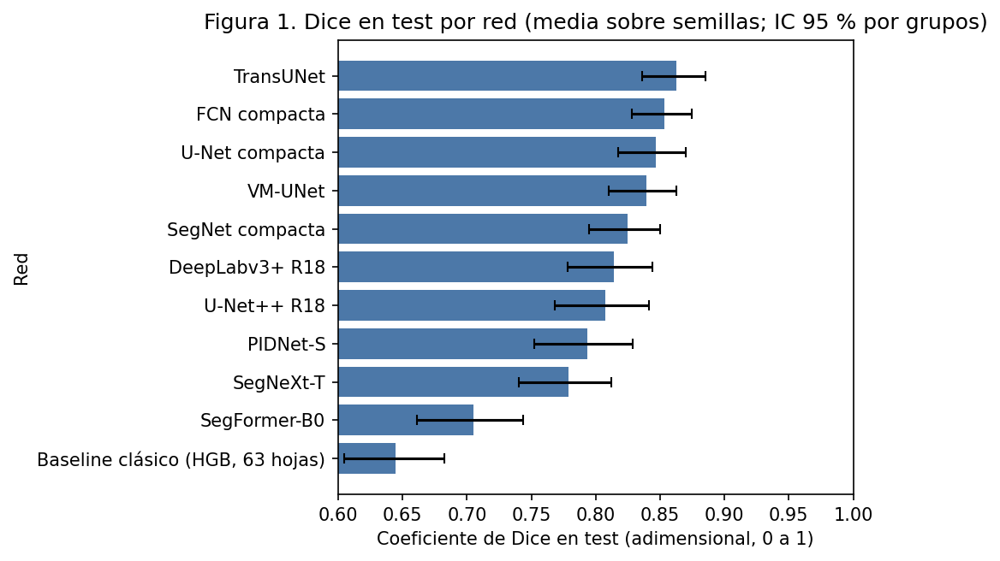

Resultados#
Actualización: paquete de Colab recibido
Se integraron 20 corridas del original y 9 de SegFormer, verificadas contra sus checkpoints. Las tablas, curvas y la lectura de estos resultados están en Resultados recibidos de Colab. Las menciones a evaluación pendiente se refieren al cierre final, no a la ausencia de entrenamiento.
Benchmark histórico de las diez redes (E2)#
Todas las cifras de esta sección salen de data/tabla_maestra.csv, la misma tabla que lee el dashboard
(src/data.py); no hay medias copiadas a mano. La tabla se genera con experiments/generar_tabla_maestra.py desde los
resultados del E2 y verifica que el Dice recalculado reproduzca el del E2.
SHA-256 de tabla_maestra.csv: bfe3680f820071aad5ed8e461a8619f2007f8005ed0a28d8325a5f6d01909952
| Modelo | Dice test | DE entre semillas | IC95 inf | IC95 sup | IoU test | Parámetros | GFLOPs | Estado |
|---|---|---|---|---|---|---|---|---|
| TransUNet | 0.8626 | 0.0057 | 0.8363 | 0.8852 | 0.7835 | 105,322,001 | 76.77 | medido en E2 |
| FCN compacta | 0.8535 | 0.0136 | 0.8282 | 0.8744 | 0.7683 | 72,145 | 1.27 | medido en E2 |
| U-Net compacta | 0.8464 | 0.0137 | 0.8177 | 0.8702 | 0.7616 | 118,273 | 3.68 | medido en E2 |
| VM-UNet | 0.8391 | 0.0297 | 0.8101 | 0.8630 | 0.7526 | 44,273,833 | 19.47 | medido en E2 |
| SegNet compacta | 0.8247 | 0.0334 | 0.7949 | 0.8499 | 0.7346 | 85,761 | 2.11 | medido en E2 |
| DeepLabv3+ R18 | 0.8140 | 0.0246 | 0.7784 | 0.8438 | 0.7282 | 12,329,297 | 9.12 | medido en E2 |
| U-Net++ R18 | 0.8076 | 0.0059 | 0.7685 | 0.8417 | 0.7264 | 15,970,449 | 31.94 | medido en E2 |
| PIDNet-S | 0.7937 | 0.0231 | 0.7526 | 0.8287 | 0.7079 | 7,716,291 | 3.13 | medido en E2 |
| SegNeXt-T | 0.7792 | 0.0104 | 0.7406 | 0.8124 | 0.6813 | 4,225,121 | 3.13 | medido en E2 |
| SegFormer-B0 | 0.7053 | 0.0104 | 0.6613 | 0.7439 | 0.5945 | 3,714,401 | 3.49 | medido en E2 |
| Baseline clásico (HGB, 63 hojas) | 0.6447 | 0.0022 | 0.6047 | 0.6824 | pendiente | pendiente | pendiente | referente fuera de la familia |
| Modelo original | pendiente | pendiente | pendiente | pendiente | pendiente | pendiente | pendiente | pendiente |

Figura 1. Dice por grupo en test de cada red. Las filas sin valor (el modelo original) no se dibujan hasta que existan sus corridas.
Modelo original frente a los diez rivales#
Pendiente
La secuencia vigente es training/colab/secuencia_v4/, ejecutable con el lanzador único sin cambiar de máquina. Se preparan 20 corridas del original y 100 de rivales: 45 históricas reutilizables y 55 nuevas. experiments/auditar_campana.py comprueba la campaña y experiments/evaluar_campana.py prepara la evaluación de validación. El cierre estadístico de test sigue pendiente; no se sustituyen sus resultados por los del E2.
La tabla siguiente fija el formato de la comparación; sus celdas se llenan desde ese script.
Prueba |
H0 |
Supuestos verificados |
Estadístico |
p crudo |
p ajustado (Holm, m = 10) |
Tamaño del efecto |
IC 95 % |
Conclusión |
|---|---|---|---|---|---|---|---|---|
Wilcoxon de rangos con signo, pareado por grupo |
Mediana de \(d_j\) igual a 0 |
Pares independientes entre grupos; simetría de \(d_j\) (gráfico) |
Pendiente |
Pendiente |
Pendiente |
\(\delta\) de Cliff |
Bootstrap por grupos |
Pendiente |
Bootstrap pareado por grupos (10.000 réplicas) |
Media de \(d_j\) igual a 0 |
Grupos intercambiables |
Pendiente |
Pendiente |
Pendiente |
Diferencia media |
Percentil |
Pendiente |
t pareado por grupo |
Media de \(d_j\) igual a 0 |
Normalidad de \(d_j\) (Shapiro-Wilk, reportado) |
Pendiente |
Pendiente |
Pendiente |
\(d\) de Cohen pareado |
t |
Pendiente |
Condición de superioridad (protocolo, §5): el mayor de los tres p ajustados es menor que 0,05, la diferencia media es al menos 0,02, \(\lvert\delta\rvert\ge 0{,}147\) y el límite inferior del IC 95 % es mayor que 0 [Holm, 1979] [Wilcoxon, 1945] [Cliff, 1993].
Complementos que no deciden#
Friedman con Iman-Davenport, Nemenyi y diagrama de diferencia crítica [Demšar, 2006], modelo de efectos mixtos y
probabilidad de superioridad: pendientes del mismo script. El valor de la diferencia crítica de Nemenyi del
benchmark del E2 está en data/tabla_maestra_meta.json.